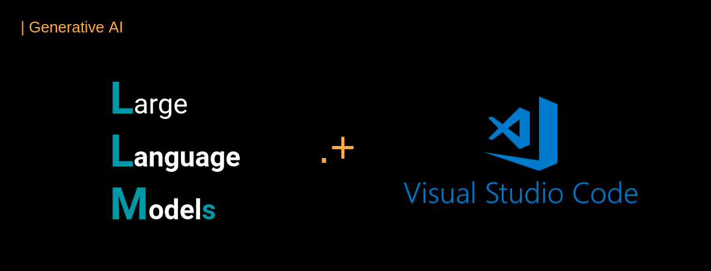
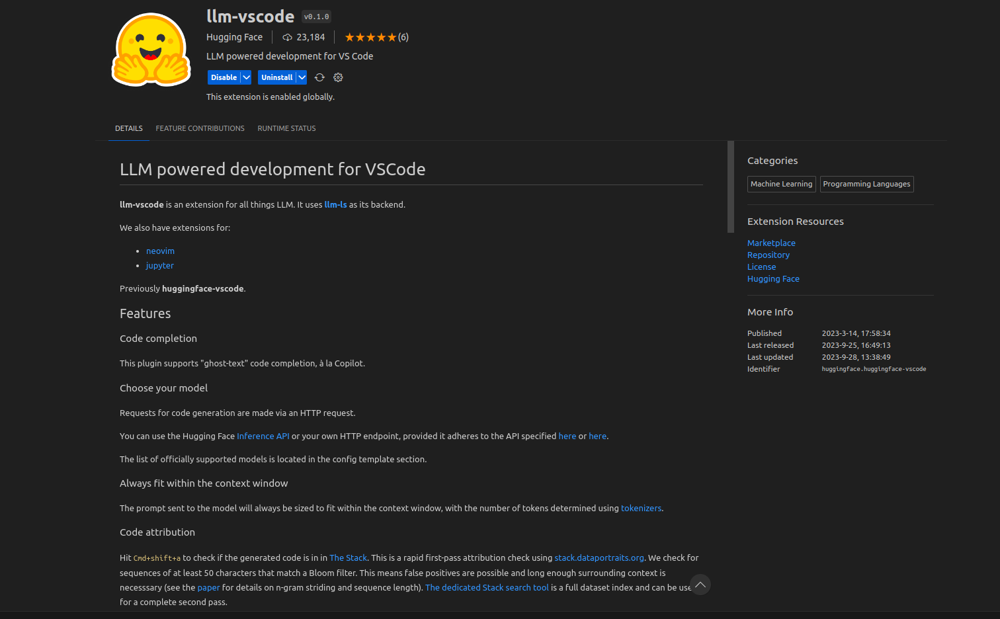
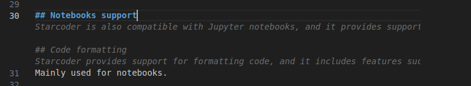
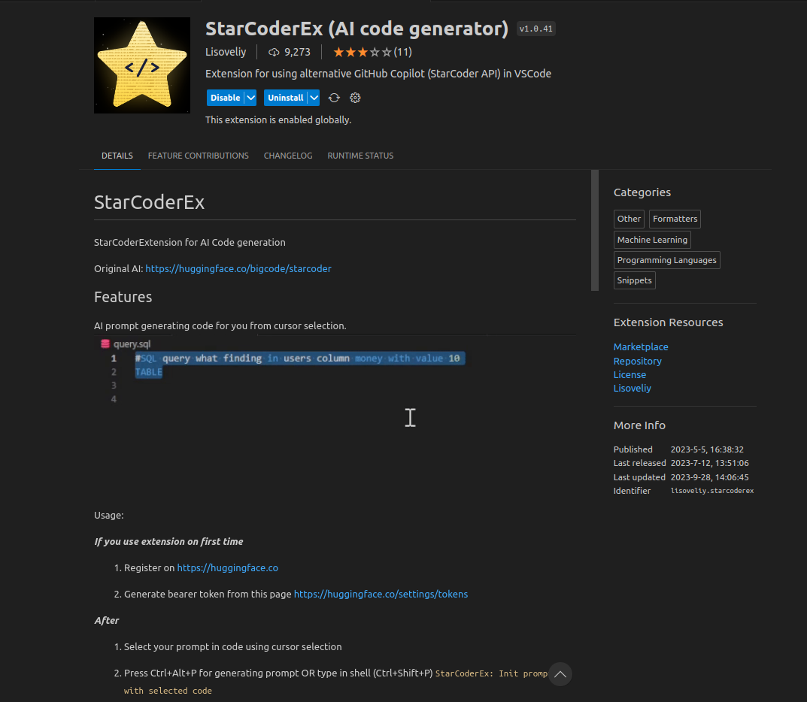
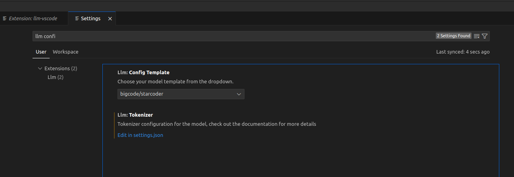
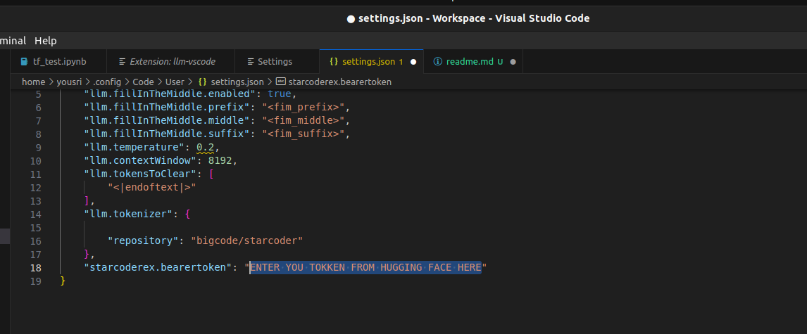
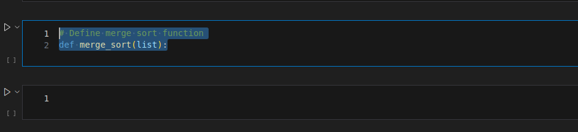
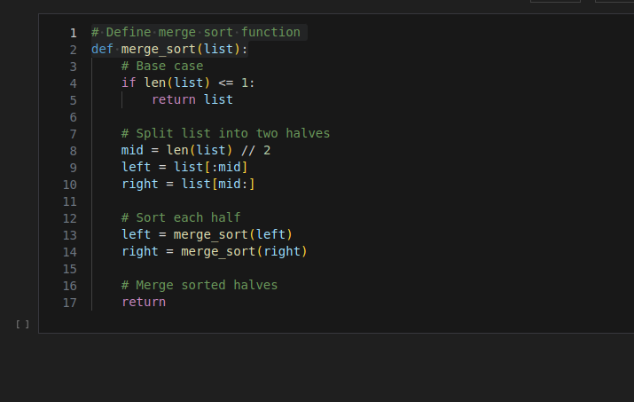

Generative AI - LLM VSCode
How to get code suggestions, generation and review inside VS Code with the LLM-VSCode extension and StarCoder, including rate limits, notebooks and configuration.
How to get code suggestions, code generation and code review from a language model without leaving VS Code, using the LLM-VSCode extension and StarCoder.

Large language models (LLMs) have the potential to revolutionize programming, making it more efficient, accessible, and creative.
Table of Content
Motivation
LLMs can help programmers in a variety of ways, including:
- Code suggestion: LLMs can suggest code completions, snippets, and even entire functions based on the context of the programmer's work. This can save programmers a lot of time and effort, and help them to write better code.
- Code generation: LLMs can be used to generate code from natural language descriptions. This can be useful for prototyping new ideas, or for automating repetitive tasks.
- Code review: LLMs can be used to review code for potential errors, security vulnerabilities, and stylistic problems. This can help programmers to write more reliable and maintainable code.
LLM-VSCode is a popular extension for the VSCode code editor that integrates LLMs with the IDE. This allows programmers to get code suggestions, generate code, and review code directly from within VSCode.
Here are some examples of how LLM models can be used to help programming:
- A programmer is working on a new feature for a web application. They can use an LLM to generate a basic skeleton of the code, and then fill in the details themselves.
- A programmer is debugging a complex piece of code. They can use an LLM to review the code for potential errors, and to get suggestions for how to fix the errors.
- A programmer is learning a new programming language. They can use an LLM to get help with the syntax and semantics of the language.
LLM models are still under development, but they have the potential to make a major impact on the field of programming. As LLMs become more powerful and accurate, they will be able to help programmers in even more ways.
Here are some additional thoughts on the power of LLM models to help programming:
- LLMs can help to democratize programming by making it more accessible to people who do not have a formal background in computer science.
- LLMs can help to increase the productivity of programmers by automating repetitive tasks and helping them to write code more efficiently.
- LLMs can help to improve the quality of code by helping programmers to find errors and security vulnerabilities.
- LLMs can help to foster creativity and innovation in programming by making it easier for programmers to try new ideas and experiment with different solutions.
Overall, LLM models have the potential to make programming more efficient, accessible, creative, and reliable.
Llm-VsCode

LLM-VSCode is a Visual Studio Code extension that provides a suite of tools and features for developing, testing, and deploying machine learning models. It is designed to simplify the machine learning development workflow and provide a consistent experience across different programming languages and frameworks.
The acronym "LLM" stands for "Language Learning Machine," which reflects the extension's focus on natural language processing and machine learning tasks.
Here are some of the key features and capabilities of LLM-VSCode:
| Key Feature | Details |
|---|---|
| Multi-language support | LLM-VSCode supports a wide range of programming languages, including Python, R, Julia, MATLAB, and JavaScript. It also provides syntax highlighting, autocompletion, and debugging tools for each language. |
| Machine learning libraries | The extension integrates popular machine learning libraries like TensorFlow, PyTorch, Scikit-Learn, and Keras, allowing developers to build, train, and deploy machine learning models directly within VSCode. |
| Data exploration and visualization | LLM-VSCode includes several data exploration and visualization tools, enabling developers to analyze and visualize their datasets, create data visualizations, and generate reports. |
| Testing and debugging | The extension provides tools for testing and debugging machine learning models, including unit testing, integration testing, and debugging tools for TensorBoard and other visualization tools. |
| Deployment | LLM-VSCode allows developers to deploy their machine learning models to various platforms, including cloud services like AWS, Google Cloud, and Azure, as well as local environments. |
| Collaboration | The extension supports collaboration features like version control, continuous integration and continuous deployment (CI/CD), and GitHub integration, making it easier for teams to work together on machine learning projects. |
| Education | LLM-VSCode offers educational resources, including tutorials, courses, and documentation, to help users learn about machine learning and develop their skills. |
Overall, LLM-VSCode aims to streamline the machine learning development workflow, providing a single, integrated environment for building, testing, and deploying machine learning models. Its multi-language support, integration with popular machine learning libraries, and collaboration features make it a valuable tool for both individual developers and teams working on machine learning projects.
Promoting and Suggesstions
LLM-VsCode trained models are used to help you through code and documentation. This extention is mainly used for Code Scripts and Documantation markdown

Rate Limit Reached Warning
As we are using free tokken from HuggingFace, so we have a limited number of free hourly usage, and it resets hourly. So we have some solution for this:
- Pay for subscription to update your account.
- Or in case of not using this service, you could either disable the extention, or logout from the Llm service using CTRL+SHIFT+P then write Llm: Logout.
Note: in case of logging out, you will have to login again and enter your hugging face tokken.
StarCoder

Starcoder is a Visual Studio Code extension that provides a comprehensive set of features and tools for developers working with the Hugging Face Transformers library. The extension is designed to simplify the process of building, training, and deploying machine learning models using the Transformers library, and it includes a range of functionality to enhance productivity and streamline development workflows.
Some of the key features and functionalities provided by the Starcoder extension include:
|Key Feature|Details| |-|-| |Syntax highlighting and autocompletion| Starcoder provides syntax highlighting and autocompletion support for the Transformers library, making it easier to write and read code. |Code snippets| The extension includes a range of code snippets that can be used to quickly create common components of a Transformers project, such as data loaders, model architectures, and training loops. |Model debugging| Starcoder includes tools for debugging and visualizing the behavior of Transformers models during training and inference. This includes features such as interactive visualizations of model weights and activations, and support for debugging models in real time. |Data exploration| The extension provides tools for exploring and understanding the data being used to train and evaluate Transformers models. This includes features such as data profiling, data cleaning, and data augmentation. |Project management| Starcoder supports managing projects and experiments, including tracking changes, collaborating with others, and reproducing results. |Integrated terminal| The extension includes an integrated terminal for running commands and scripts related to Transformers development, such as data preparation, model training, and deployment. |Deployment support| Starcoder provides tools for deploying Transformers models to cloud platforms such as AWS, Google Cloud, and Azure, as well as support for containerization using Docker. |Community support| The extension is actively maintained and updated by the Hugging Face team, and it includes links to community resources, documentation, and tutorials.
Overall, the Starcoder extension is designed to make it easier and more efficient to work with the Hugging Face Transformers library in Visual Studio Code, and it can help developers save time and effort when building, training, and deploying machine learning models.
Notebooks support
Starcoder is also compatible with Jupyter notebooks, and it provides support for running code in notebooks, as well as for debugging and visualizing the behavior of models during training and inference.
Configuration
To configure StarCoder, you need to add a token from hugging face to "starcoderex.bearertoken".

Adding token from hugging face to "starcoderex.bearertoken".

Usage of StarCoder
On Jupyter Notebook, Write your promot, just like a description to desired functionality.

2- Highlight your promot, then Ctrl+Shift+P to open the command palette.
3- Select StarCoderEX: Init Promot with selected code.
4- Generate the desired function.
